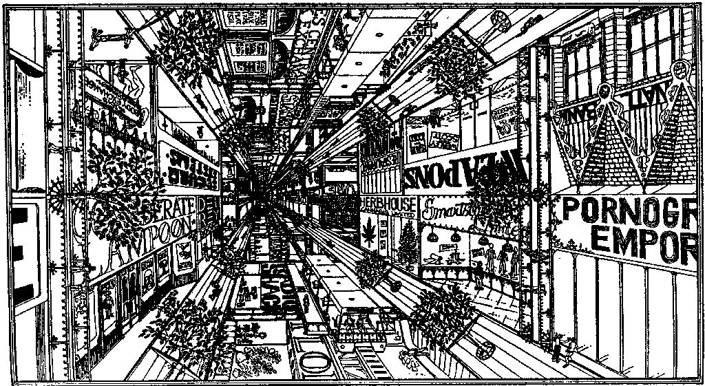

The Venus Belt by L. Neil Smith Illustration of Ceres Central by Chris Barbieri This is a horizontal view.
by L. Neil Smith
Illustration of Ceres Central by Chris Barbieri
This is a horizontal view.